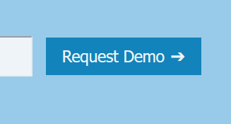

Mockups

Visual Details


Working Solution
To see the working solutions, you can follow the following link
Visit siteMotivation
For this project, I went with a very simple colour scheme. It consists mostly of black, white and grey, with 2 blue accent colours to add to the site.
I choose blue as the accent colours, as it is a very calm colour, while still adding a pop of colour and guiding the eyes to call-to-actions
For the dark-theme, I went with darker greys for the previeous white colours, and otherwise kept the darks the same. I choose to darken the accent colours as well, as leaving the too bright could become irritating to the eye.